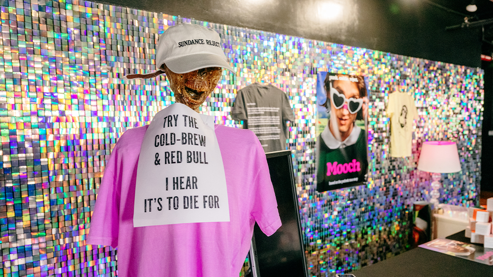

MOOCH WINS BIG at Rejecta Film Festival
The only film at the festival takes home 3 of 7 jury awards. Let’s not overthink this.
NEW YORK, NY — In one of the most dominant festival performances of the year (if not ever), MOOCH took home a whopping 3 out of 7 awards at this weekend’s inaugural Rejecta Film Festival. The fact that it was the only film playing appears to have had minimal impact on the jury’s passionate deliberations — or at least that’s what the official Rejecta press release would like you to believe.
Writer/director/star/festival founder/van operator Jeff Ryan was quoted as saying, “Listen, some people say this is a conflict of interest. Others say it’s a desperate cry for validation. But to those people I say: did your film win 3 awards this weekend? Exactly.”
The festival, which took place largely in the back of a white van parked across from Tribeca’s Village East Cinema, drew a mix of curious passersby, cast members, and friends who thought they were attending an actual screening inside the theater. “Wait, this wasn’t part of Tribeca?” asked one confused attendee inside the van.
🏆 The Big Winners & Jury Reactions
(WINNER) Grand Jury Prize — MOOCH
“We chose the winning film not only because it was the only film entered in this category/festival, but because it was heartfelt and honest... We are proud of Jeff’s life and the path he paved here with Rejecta. But Jeff, don’t let this go to your head. Filmmakers like you are a dime a dozen. Now go forth — and party hard!”
(LOSER) Special Jury Prize — MOOCH
Jury Response: “We initially planned to award MOOCH... but after considering Diet Dr. Pepper and Scooby Doo (2002) on Peacock, we ultimately awarded Addison Heimann’s Touch Me instead.”
(LOSER) Best Director — MOOCH
Tristan Scott-Behrends awarded Best Director to Joanna Arnow for The Feeling That the Time for Doing Something Has Passed.
(WINNER) Best Lead Performance — Jeff Ryan (MOOCH)
“We were witnessing the public unraveling of a dear friend’s psyche. In that way, MOOCH may be the most important film release of the year. Jeff, this award is technically for your performance — but mostly for seeming okay tonight.”
(WINNER) Best Screenplay — MOOCH
"I really preferred the emotional nuance of Caddyshack 2, but this Smooch movie is fine as far as third entries go. I do like that rawboned, rubbery man-boy in the lead because I always wondered what Ansel Elgort might look like if he got stuck in a taffy puller for a few months."
(LOSER) Innovation + Pure Brilliance — MOOCH
Anonymous Jury Member: “Nothing will save you but yourself.”
(LOSER) Spirit of Rejecta — MOOCH
Peter Nogueira: “I found myself laughing so as not to cry. Never have I witnessed more self-aggrandizement than from writer, director, and ‘star,’ Jeff Ryan. Bravo!”

🎉 Mixed Reactions at the Rejecta Party
While the awards haul was technically historic, not everyone was impressed — especially at the festival afterparty. Guests reported that Jeff Ryan spent much of the night loudly reminding everyone he had “swept 3 categories,” despite the fact that MOOCH lost 4 of the 7 awards available.
“At first I was happy for him,” said one cast member. “Then by hour two of him explaining the voting process to random strangers at the bar... I started to feel bad.”
“He kept saying ‘We made history tonight!’” added another attendee. “And I’m like... dude, you lost more than you won. Calm down.”
Sources say Ryan was later seen trying to negotiate with the bartender for a free drink based on his “award-winning status.” The bartender declined to comment.
For press inquiries, screeners, interviews, or questionable ride-alongs:
Contact: jeff@firstnamesfilms.com